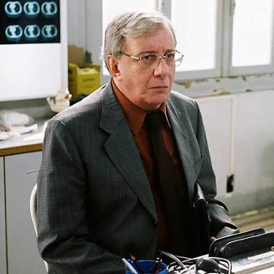
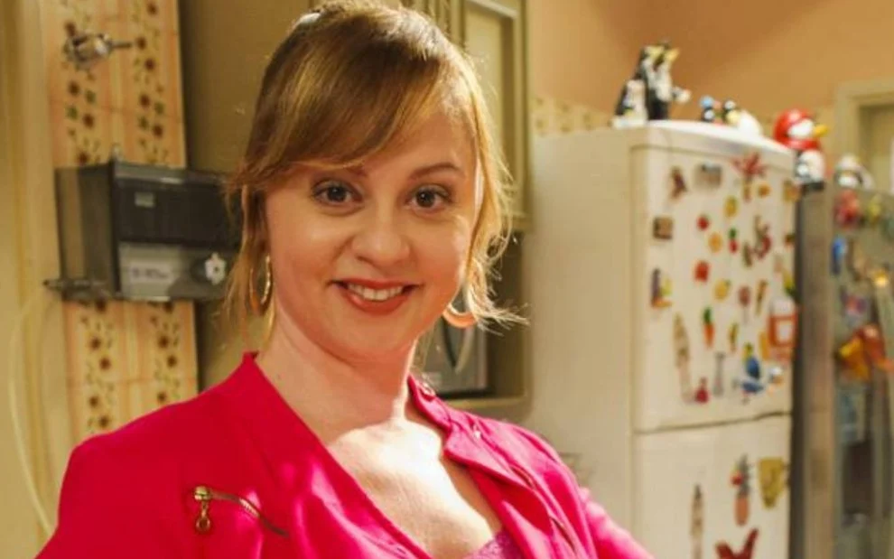
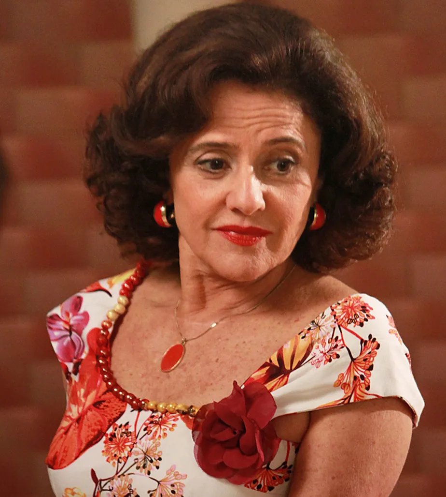
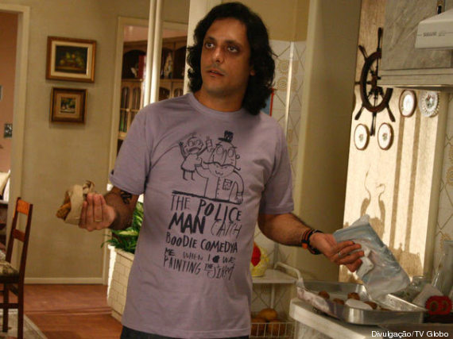
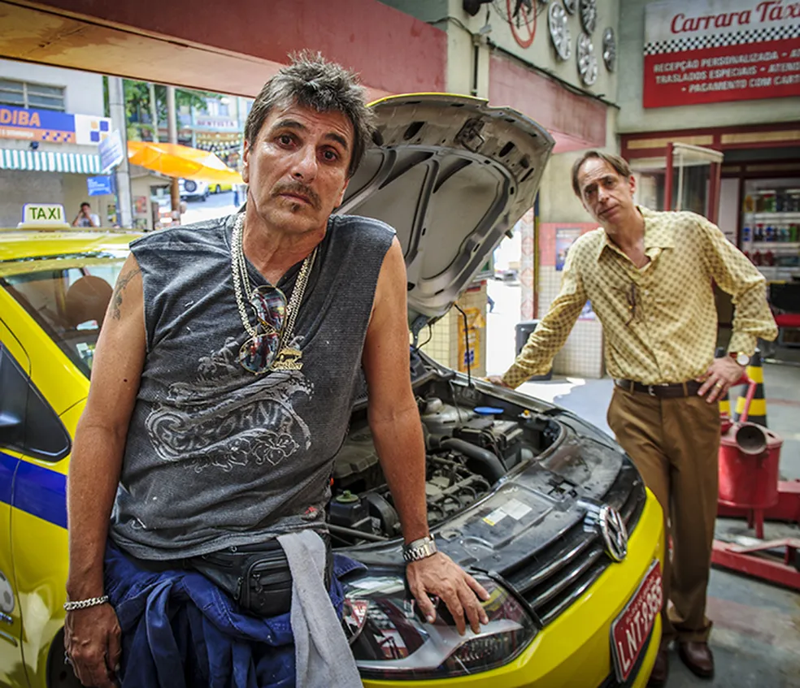

Agostinho Carrara
Paulo Araujo - 2001 a 2014
Lineuzinho

Marco Naniniem - 2001 e 2014
Bebel

Guta Stresser - 2001 e 2014
Dona Nenê

Marieta Severo - 2001 e 2014
Tuco

Lucio Mauro Filho - 2001 e 2014
Paulão

Evandro Mesquita - 2001 e 2014
Beiçola
Marcos Oliveira - 2001 e 2014
PAGINA INICIAL